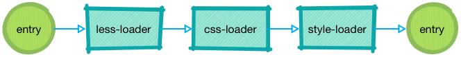
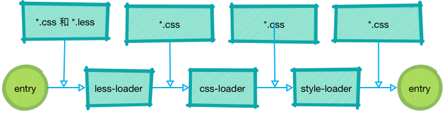
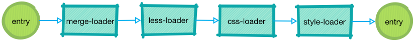

巧用 webpack loader 实现项目的定制化
Contents
背景
有这样的需求：项目交付的版本要求支持针对客户定制产品的LOGO、登录界面的背景。
简单分析
手动替换文件再编译这种蠢到极点的方法肯定是无法接受的。
如果你说采用分支的方式来对付这种需求，我觉得也是不太现实。分支虽然好用，但是不要瞎用。
项目在交付时需要避免交付的代码中包含其他客户的资源和信息。这意味着，通过配置文件等在运行时加载的形式是行不通。
想来想去，问题的本质无非就是解决项目编译输出时CSS可以使用我们指定的图片文件，而我们需要将这个过程自动化。
粗暴的方案
先来一种简单而又直接的方案：直接替换。其步骤如下：
- 将图片资源放入指定的目录中，按项目(客户)区分
- 执行替换图片资源的脚本，使用指定的资源替换
执行项目的编译命令
1 2 3 4 5 6 7 8 9 10 11 12 13 14 15 16 17 18 19 20 21 22 23 24 25 26 27 28 29 30 31 32 33 34 35 36 37// node ./pre-packaging.js it const path = require("path"); const fs = require("fs"); const project = process.argv[2]; const distPath = path.resolve("./src/static/images"); // 源代码目录 const resourcePath = path.resolve("./resources", project); // 项目静态文件目录 function copyDir(src, dist) { try { fs.accessSync(dist, fs.constants.R_OK | fs.constants.W_OK); } catch (err) { fs.mkdirSync(dist); } const copyFile = (src, dist) => { fs.createReadStream(src).pipe(fs.createWriteStream(dist)); }; const dirList = fs.readdirSync(src); dirList.forEach(item => { const currentPath = path.resolve(src, item); const currentDistPath = path.resolve(dist, item); if (fs.statSync(currentPath).isDirectory()) { copyDir(currentPath, currentDistPath); } else { const src = currentPath; const dist = currentDistPath; copyFile(src, dist); } }); } copyDir(resourcePath, distPath);
看起来我们的问题已经得到解决。但是你仔细想想，便会发现，这种简单粗暴的方案存在多个不足之处。
- 侵入性强。每次自定义版本构建之后都修改项目中的图片资源，这些修改很容易被同步到远端。
- 拓展性差。自定义的图片资源必须严格按照源码中的约定，比如图片格式，图片尺寸。每一张图片都需要在代码中提供相应的插槽。
- 功能单一。只能修改图片的引用，当其他的样式需要调整时便无能为力。
- 体验性差。将构建过程拆分为准备静态资源和编译两个过程。
我们需要优雅
如此丑陋的方案是无法接受的，是否有更好的方案？此时我们回到问题：如何实现同一个项目针对不同客户定制界面的Logo和登录背景？
我们需要修改的是什么？CSS!
既想修改CSS样式，又想不对源码进行修改，那只有采用CSS样式具有的覆盖规则来实现。源文件中设置默认样式，约定使用的 CSS 选择器，通过编译将新的样式文件和源文件合并，所有的样式打包输出。这种方式有诸多好处：
- 侵入性弱。只需要在项目仓库中维护对应的资源，不影响源代码，交付时也不会包含多余的资源。
- 拓展性强。自定义的图片资源不在依赖源码，可以使用任意的图片格式。
- 功能丰富。可以额外增加自定义样式，不限于需求中的Logo和背景。
- 体验好。在编译阶段加载指定的样式，一步到位。
说到前端的编译打包，自然想到Webpack。可以从 Webpack Loader入手，实现上述过程。
Webpack Loader
在 Webpack 的生态中，Loader 用于对模块的源代码进行转换。Loader 可以使你在 import 或”加载”模块时预处理文件。因此，Loader 类似于其他构建工具中“任务(task)”，并提供了处理前端构建步骤的强大方法。Loader 可以将文件从不同的语言（如 TypeScript）转换为 JavaScript，或将内联图像转换为 data URL。
Webpack Loader的编写可参考官方文档，有非常详细的说明。
以常见的一段 Webpack 配置为例：
|
|
上述配置在执行过程中，less文件的编译会按照如下顺序 (Webpack Loader 执行顺序)：

在整个编译过程中，我们可以在每一个loader的开始前和结束后合并我们自定义样式，如下图所示：

在less-loader之前加入自定义的CSS样式是最好的时机，为什么呢？有两点：
- 同时支持原生 CSS 和 Less 两种文件。
- 在整个编译开始之前加入，对编译的整个过程没有影响。新增的样式同样享受完整编译过程。
编译过程修改为如下图所示：

开发一个 merge-loader
在目前的场景中，merge-loader 只需要一个参数：自定义样式的文件路径。所以 Webpack 配置文件可以修改为：
|
|
merge-loader中的逻辑如下：
|
|
你以为这样就结束了？不，上述逻辑有两个问题还需优化：
- 当样式中存在图片的引用时，以字符串形式拼接在源码样式中会遇到图片路径错误的问题
- 只要文件通过了规则
/\.less&/的匹配，就会执行一次merge操作。含有<style lang="less"></style>的vue文件也会触发这个规则(虽然重复引用不会增加代码量)。
这两个问题的解法如下：
- 使用
@import "path/of/style"方式 merge 样式文件。其他的处理交给后面的loader，保证文件和图片路径引用正确。 - 增加一个参数
target，指定一个文件作为 merge 的对象。
这样一来，loader的逻辑修改如下：
|
|
Webpack 配置文件中loader部分修改如下：
|
|
优化 Loader
最后利用 Loader 工具库来优化代码
|
|
结束
至此，已经用一种比较优雅的方式实现了项目Logo等样式的定制化，其优势在于：
- 侵入性弱。只需要在项目仓库中维护对应的资源，不影响源代码，交付时也不会包含多余的资源。
- 拓展性强。自定义的图片资源不在依赖源码，可以使用任意的图片格式。
- 功能丰富。可以额外增加自定义样式，不限于需求中的Logo和背景。
- 体验好。在编译阶段加载指定的样式，一步到位。
如果同学们有其他的实现方式，欢迎讨论~~
Author 张伦
LastMod 2019-01-26